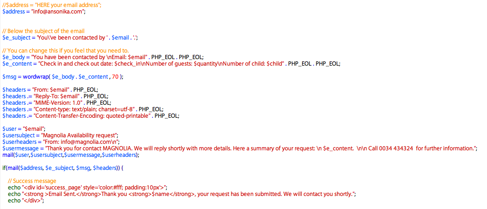
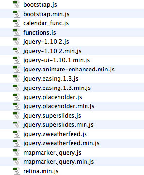

Documentation by “Ansonika” v1.4
“Magnolia HTML site template”
Created: 16 July 2014
Last update: 18 November 2014
By: Ansonika
Email: info@ansonika.com
Thank you for purchasing my theme. If you have any questions that are beyond the scope of this help file, please feel free contact me at info@ansonika.com
Table of Contents
- HTML Structure
- CSS Files, Structure and basic modifications
- Check availability form
- JavaScript
- Sources and Credit
V1.4 6 November 2014: unclosed div for about section
V1.3 6 November 2014
- Respond and Hml5Shiv fixed for IE8 in the head of the page: the links provided from here http://getbootstrap.com/getting-started/ should be http and not https.
WRONG
<!--[if lt IE 9]>
<script src="https://oss.maxcdn.com/libs/html5shiv/3.7.0/html5shiv.js"></script>
<script src="https://oss.maxcdn.com/libs/respond.js/1.3.0/respond.min.js"></script>
<![endif]--> OK
<!--[if lt IE 9]>
<script src="http://oss.maxcdn.com/libs/html5shiv/3.7.0/html5shiv.js"></script>
<script src="http://oss.maxcdn.com/libs/respond.js/1.3.0/respond.min.js"></script>
<![endif]-->
V1.2 31 July 2014
- Added rooms pictures slider to the rooms sections
- Read details of the update
V1.1 21 July 2014
- Fixed calendar double months on mobile
- Added a form field for the room type
- Added booking button on rooms section
- How to change the calendar language
- Read details of the update
A) HTML Structure - top
This theme has a fixed centered layout 1170px. It's based on Boostrap framework grid. It's ULTRA RESPONSIVE!!
B) CSS Files Structure and basic modfication - top
The css files are inside the css folder (minified versions included).
- jquery-ui-1.10.1.css: Basic styles for the calendat datepicker.
- bootstrap.css: Boostrap general styles framework (not necessary to open/edit)
- weather.css: Styles for the weather widget.
- style.css: all layout styles (mediaqueries included)
To modify colors, typografy, button style ecc....find the realtive comment line in style.css. Below how the file is organized:
1. SITE STRUCTURE and TYPOGRAPHY
2. FORMS
3. COMMON
5. MEDIA QUERIES
Change the logo
To change the logo, simply use your PNG24 file and change the width of the container #logo in style.css. Remember to create a retina version of it (that is double size-name logo@2x.png).
Change your map location
Open functions.js and find this lines of code: 1) add you longitude and latitude. 2) add your complete address.
//set up markersChange wheater location
var myMarkers = {"markers": [
{"latitude": "51.511732", "longitude":"-0.123270", "icon": "img/map-marker2.png"}
]
}; //set up map options
$("#map").mapmarker({
zoom : 14,
center : 'Covent Garden London',
markers : myMarkers
});
Go to www.weather.com, in the top bar insert you city. Then from the new page, copy from the link of the page the cose (ex. UKXX0085 for LondonUK). Open functions.js and apply this code to the code lines below
$('#weather').weatherfeed(['SPXX0047'], {
forecast: true
});
Wheater location common issue
Some towns are not supported by the scripts; it's necessary to use antoher method:
1) Go to http://woeid.rosselliot.co.nz/ and type your location or one near as much is possible. Copy the id that the result give.
2) Open js/functions.js:
Replace these line of code (with your id):
$('#weather').weatherfeed(['SPXX0047'], {
forecast: true
});
with
$('#weather').weatherfeed(['your id'], {
forecast: true,
woeid: true
});
Change the button colors, and main typography styles
It's all placed at the top of styles.css under the section 1.SITE STRUCTURE and TYPOGRAPHY:
/** Typography **/ ........ /** List **/
..... /** Links **/
..... /** Buttons **/
..... etc...
How to add or remove disable/not available dates
Open js/calendar_func.js ..... remove or add these lines of code (note that the month is -1):
if (date.toDateString()===new Date(2014,6,11).toDateString()) {
return [false,""]; // Don't show 11th July 2014
}
REPEAT THIS OPERATION for THE DATE CALENDAR SETTINGS FOR SIZE SCREEN OVER 520PX
THE GRID
Please refer to this documentation Boostrap
UPDATE v1.2
How to update from previous versions:1) Copy these css styles in your css folder: owl.theme.css + owl.carousel.css 2) Copy these js files in your js folder: owl.carousel.js + owl.carousel.min.js 3) Copy this image in your img folder: AjaxLoader.gif 5) In the head of your html page addUPDATE v1.1 - top
<!-- Owl Carousel Assets -->
<link href="css/owl.carousel.css" rel="stylesheet">
<link href="css/owl.theme.css" rel="stylesheet"> 6) Here the html of one slider:
<div class="photo_polaroid">
<div class="carousel">
<div class="item"><img src="img/room_2.jpg" alt="" class="img-responsive"></div>
<div class="item"><img src="img/room_2.jpg" alt="" class="img-responsive"></div>
<div class="item"><img src="img/room_2.jpg" alt="" class="img-responsive"></div>
</div><!-- End carousel -->
</div> 7) At the bottom of the html page call the js: <!-- CAROUSEL -->
<script src="js/owl.carousel.min.js"></script>
<script>
//Carousel
$(document).ready(function(){
"use strict";
//Carousel
$(".carousel").owlCarousel({
items : 1,
singleItem:true,
responsive:true,
autoHeight : true,
transitionStyle:"fade"
});
});
</script>
Fixed calendar double months on mobile: by defualt the theme comes with a double view month calendar that can disabled or enable via this param "numberOfMonths: 1", inside calendar_func.js. Alternatively you can use a simplified scritp ....calendar_func_single_month_view.js
calendar_func.js // DATE CALENDAR SETTINGS FOR SIZE SCREEN UNDER 520PX
$('#jrange div')
.datepicker({
showButtonPanel: true,
numberOfMonths: 1,
beforeShowDay: function ( date ) { ..... // DATE CALENDAR SETTINGS FOR SIZE SCREEN OVER 520PX
$('#jrange div')
.datepicker({
showButtonPanel: true,
numberOfMonths: 2,
beforeShowDay: function ( date ) { .....
How to change the calendar language. Spanish and French are in in js/locale folder...if you need more language please go to https://github.com/jquery/jquery-ui/tree/master/ui/i18n
Open index.html and at the bottomo add the language file like the example below:
<!-- JQUERY -->
<script src="js/jquery-1.10.2.min.js"></script>
<script src="js/jquery-ui-1.10.1.min.js"></script>
<script src="js/locales/datepicker-fr.js"></script>
<script src="js/calendar_func.js"></script>
C) PHP files: Check availability form - top
All the files you need are located in asset folder. If you need to change the allert messages open assets/validate.js. Below an example; all the files are well commented.

Check availability form
If you doesn't recieve the email please first check:
1) Your spam folder
2) If you hosting requires special settings
3) If your email has to be managed from the same hosting provider
4) Set the permission of the asset folder on your host to 777 with your FTP client
D) JavaScript - top
This theme use These Javascript (minified versions included).

E) Sources and Credits - top
I've used the following images, icons or other files as listed.
- Twitter Bootstrap
- Fontello
- Jquery easing
- Background images slider
- Weather widget
- Jquery UI Datepicker
- Jquery placeholder
- Owl carousel
- Jquery
Images are not included. You can buy them on Photodune.

Once again, thank you so much for purchasing this theme. Please take a moment to rate it from your Downloads page.
Need support?
For support contact me using the form on my profile page with subject [ThemeForest Support] Template name, via Support site or submit a comment on item page. You will receive an answer within 24-48 hours (working days) GMT +1.- I only provide support for fixing bugs or small issues on my items.
- I don't provide free support for additional custom modifications to the items.
- Please provide your site link, screenshots and other information about your issue.
Need customization or availability for freelance projects?
Just send an email via profile page form; please don't forget to specify:- if you are a company, agency or private user
- all the information about your projects, needs, site urls, project sheet, etc..
- from which country you are
- if you have a deadline
- if you have basic knowledge of HTML , CSS, JS, PHP
Ansonika